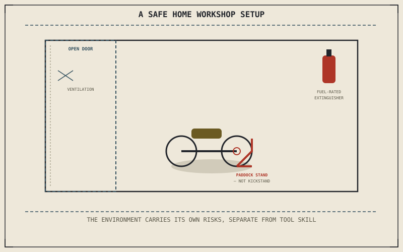

The right tools, used correctly, guided by the right reference — Chapters 12.1 through 12.3 covered all three, and none of them address where the work actually happens. A workshop isn't just a garage with a bike in it; it's a set of deliberate habits around fire risk, structural stability, and chemical exposure that no amount of tool or torque-spec knowledge, on its own, protects against.
Chapter 12.3 closed by pointing to this exact gap: a physical space safe enough to actually do the work in. This chapter covers it.
Ventilation and Fire Safety
Running an engine indoors, even briefly, fills an enclosed space with carbon monoxide far faster than most people expect, and a closed garage door is not adequate ventilation for that purpose under any circumstances. Fuel is also flammable in vapor form well before a liquid spill would obviously suggest danger, which makes open flames, running appliances with pilot lights, and anything capable of producing a spark genuinely hazardous near an open fuel system — and a fire extinguisher rated for fuel fires specifically, not just a general household unit, belongs within reach of any space fuel is ever handled in.
Stands and Lifting: Never Trust the Kickstand Alone
Chapter 11.8's wheel bearing test already assumed a bike properly supported with the wheel off the ground — a kickstand alone was never adequate for that, and it isn't adequate for most other work requiring the bike upright without a rider either. A proper paddock stand or wheel chock, rated for the motorcycle's actual weight, holds the bike stable enough to work on safely, where a kickstand's narrow contact point and shallow lean angle leave the bike one bump or one shifted tool away from tipping onto whoever is working beneath it.
A closed garage door is not ventilation, a kickstand is not a workshop stand, and none of the tool or torque-spec knowledge from earlier in this part protects against either mistake — the workshop environment itself carries its own, entirely separate set of risks.

A diagram of a safe home workshop setup: an open garage door for ventilation, a fuel-rated fire extinguisher within reach, and a motorcycle held upright on a proper paddock stand rather than its kickstand.
Chemical and Fluid Safety
Chapter 11.10's brake-bleeding procedure handles a fluid that's both toxic and corrosive enough to strip paint on contact, and gloves and eye protection are the minimum precaution while handling it — a single dripped drop left unnoticed on bodywork can do visible cosmetic damage within minutes. Used oil and coolant need proper disposal rather than a drain or the ground, both for environmental reasons and because most municipalities treat improper disposal as an actual violation, not merely bad practice.
A Common Misconception, Cleared Up Early
It's a common assumption that once a rider owns the right tools, knows how to torque a fastener correctly, and can read a service manual, they're fully equipped to work safely on a motorcycle. Every risk this chapter described — carbon monoxide, fuel vapor, a bike tipping off an inadequate stand, corrosive fluid on skin or paint — exists independently of all three of those skills, and none of Chapters 12.1 through 12.3 addresses any of them. Competence with tools and competence with a safe working environment are separate skills, and this part has now covered both.
Where This Leads
Tools, correct use, reference material, and a safe space to combine all three — Part XII is nearly complete. Chapter 12.5 closes it by returning tools and workshop practice to the whole-system view this book keeps coming back to.
Key Concepts to Remember
- Running an engine indoors requires genuine ventilation, not a closed garage door, and a fuel-rated extinguisher belongs near any open fuel system.
- A proper paddock stand or wheel chock, not a kickstand, is what actually holds a motorcycle stable for work requiring it upright without a rider.
- Tool and torque-spec competence and a safe working environment are separate skills — mastering one doesn't automatically address the other's risks.
Cross-References
| ← Ch. 11.8 | Assumed a bike properly supported with the wheel off the ground for its bearing test; this chapter establishes the proper stand that support actually requires. |
| ← Ch. 11.10 | Described the brake-bleeding procedure; this chapter covers the corrosive, toxic nature of the fluid that procedure handles directly. |
| → Ch. 12.5 | Closes Part XII by returning tools and workshop practice to the whole-system view this book keeps returning to. |